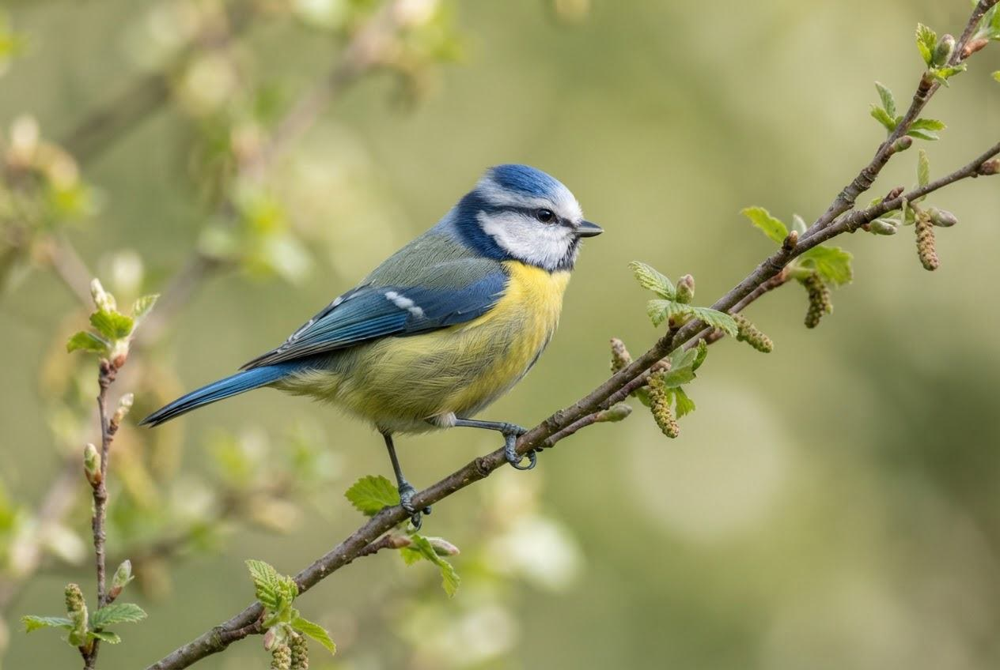
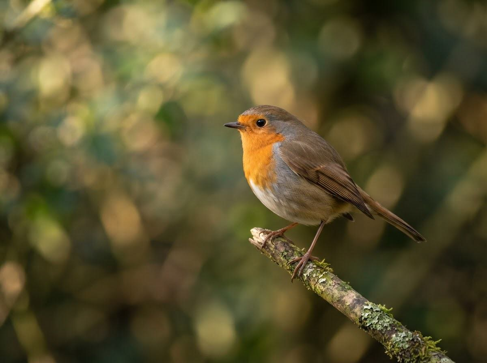
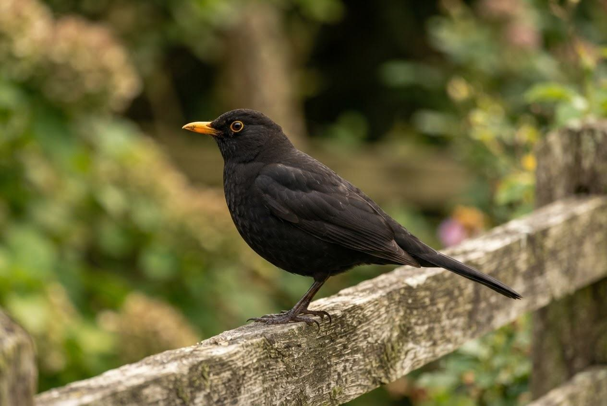
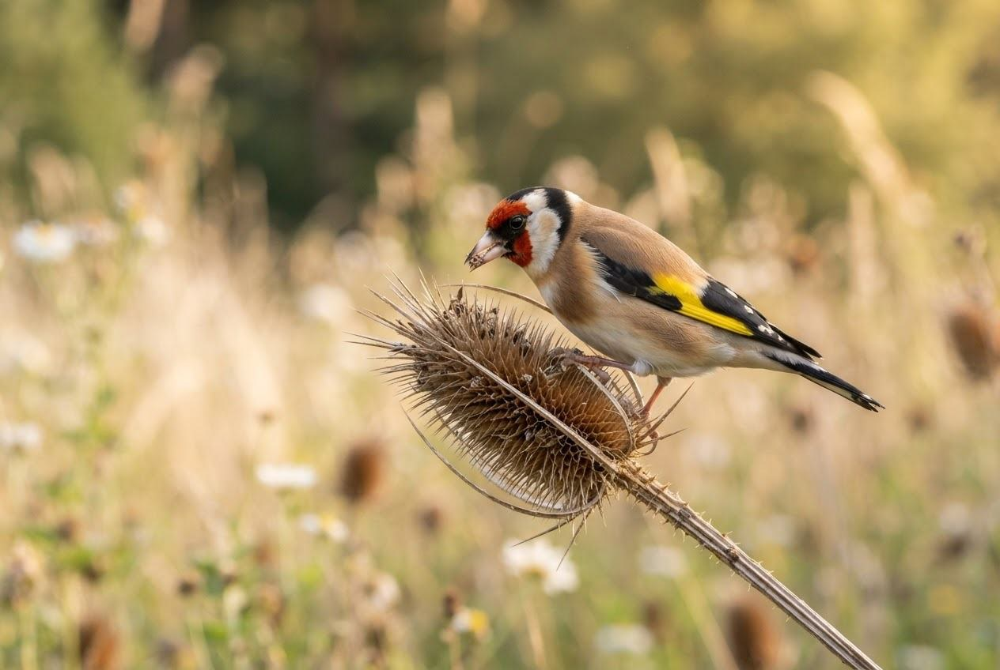
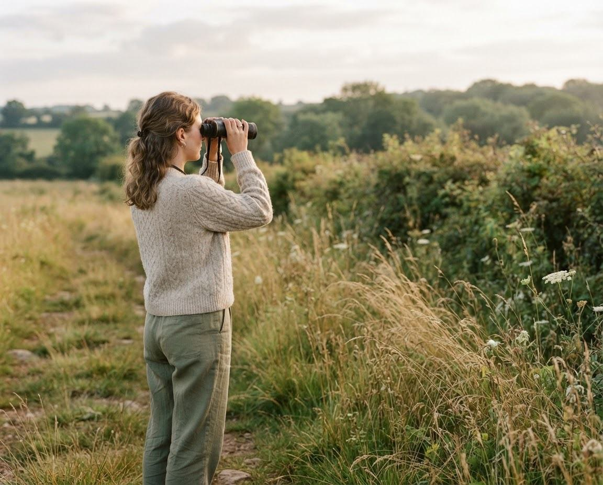

Blue tit ↗
Cyanistes caeruleus
A tiny acrobat with a blue cap, yellow belly and an endless curiosity. Blue tits search branches for insects and visit garden feeders for seeds.
⌾ Gardens & woodland
A LITTLE CURIOSITY. A WHOLE WORLD OF BIRDS.
From a familiar garden song to a flash of colour in the trees, birds make the everyday a little more wild. Let’s get to know them.
♧ No expertise needed. Just a moment to notice.

✦ OUTSIDE, EVERY DAYFAMILIAR FACES
Start with three birds you might spot on your next walk.

Cyanistes caeruleus
A tiny acrobat with a blue cap, yellow belly and an endless curiosity. Blue tits search branches for insects and visit garden feeders for seeds.
⌾ Gardens & woodland

Turdus merula
Look for the male’s golden-yellow bill and listen for its rich, fluting song. Blackbirds forage on lawns for worms, insects and fallen fruit.
⌾ Parks & gardens

Carduelis carduelis
A red face, a golden wing stripe and a soft, tinkling call. This colourful finch uses its pointed beak to feed on seeds, especially thistles.
⌾ Meadows & gardens

YOUR FIRST FIVE MINUTES
A window, a local park or your own garden. Early mornings are a lovely time to start.
Notice size, shape and colour. Listen for a call. Binoculars help, but curiosity is all you need.
Jot down what you saw, where and when. Each small observation helps you learn.
SMALL ACTS. A WILDER WORLD.
Birds need healthy places to live. The good news? A few thoughtful changes close to home
can make a real difference.
Plant native flowers and shrubs. A wilder corner offers food, shelter and a place to nest.
A shallow dish gives birds a place to drink and bathe. Clean it and change the water daily.
Keep your distance from nests, keep dogs close and let birds go about their day undisturbed.